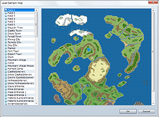
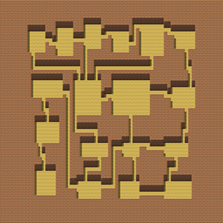
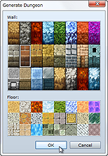
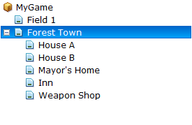

Right-clicking a map on the map list displays a shortcut menu containing commands for that map, including commands for changing settings and copying data. The functions of each command are described below.
Adds new map data. See Setting Map Data for more information on available settings.
Opens the Create Map dialog box. See Setting Map Data for more information on available settings.

Create new map data based on sample data. Click a map name in the list, check its content, and then click OK.
Copies map data to the clipboard.
Pastes map data from the clipboard.
Deletes map data.
Shifts tile placement for the entire map. Specify the shift direction and number of tiles.


Automatically generates a maze-like map. By specifying the tiles to use for the ground and walls, you can have the application automatically draw a maze-like map with a number of rooms connected by corridors.
A dungeon will be generated for the entire map that you selected, so if you want to create a large dungeon, start by creating a large map. You will end up with a rather poor dungeon map if you start with a map that is too small.

Dragging map data on the map list to another location on the list allows you to place it near related data. This is handy for managing map data by grouping it, such as placing the internal maps for buildings under a town map. Maps moved to the bottom can be moved to the top level by dragging them to the project name folder.
This hierarchical display is only for the map list. It has no effect whatsoever on map design and settings.